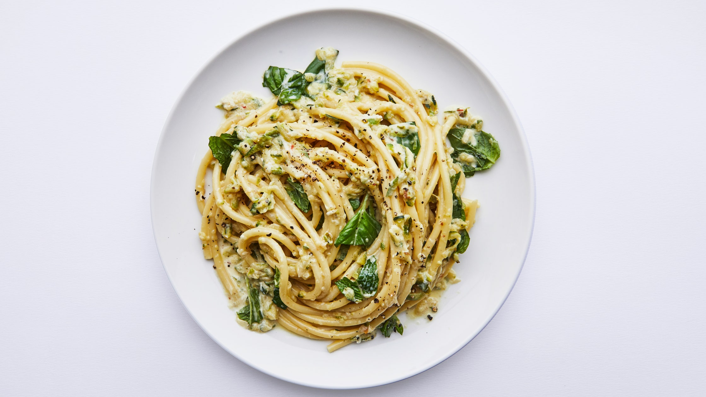

Creamy Lemon Zucchini Pasta
With the help of the large holes on a box grater, zucchini transforms into a pile of soft shreds. You’ll be amazed by how many zucchini cook down into this one dish—a very good thing when you’re staring down a pile of this prolific summer star.

Ingredients
- 2lb. zucchini or summer squash (4–6)
- 1 large shallot or ½ small onion
- 4 large garlic cloves
- 3 Tbsp. extra-virgin olive oil
- ¼ tsp. crushed red pepper flakes
- 2 tsp. Diamond Crystal or 1¼ tsp. Morton kosher salt
- Freshly ground black pepper
- 1 lemon
- ½ oz. Parmesan, plus more for serving
- ½ cup (lightly packed) basil or mint leaves
- ½ cup heavy cream
Instructions
- Bring a large pot of water to a boil and salt heavily.
- Meanwhile, place a clean kitchen towel in a large bowl (or on a large cutting board). Trim 2 lb. zucchini or summer squash (4–6), then grate on the large holes of a box grater directly into towel. Peel 1 large shallot and grate on the large holes of grater into towel. Peel 4 large garlic cloves and grate on the small holes of grater into towel.
- Gather ends of towel together, then squeeze over bowl (or the sink) with all your might to extract water from the zucchini. Squeeze until it’s hard to get out any more liquid. You should have extracted about ⅔ cup zucchini liquid, just FYI; discard.
- Heat 3 Tbsp. extra-virgin olive oil in a medium Dutch oven or very large skillet over medium-high. Add ¼ tsp. crushed red pepper flakes and cook, stirring, until fragrant, about 30 seconds. Add zucchini mixture (unwrap the balled-up towel over the pot for easiest transfer) and 2 tsp. Diamond Crystal or 1¼ tsp. Morton kosher salt and stir to coat. Season generously with freshly ground black pepper. Cook, stirring occasionally, until zucchini mixture is jammy, thick, and starting to stick to bottom of pot, 15–20 minutes.
- When the zucchini has been cooking 5–10 minutes, add 12 oz. spaghetti, linguine, bucatini, or other long pasta to pot of boiling water and cook until al dente. Scoop out 2 cups pasta cooking liquid and set aside.
- Meanwhile, juice 1 lemon into a small bowl. Grate ½ oz. Parmesan on the small holes of grater (you should have about ¼ cup; you can also use ¼ cup pre-grated Parmesan). Very coarsely tear or chop ½ cup (lightly packed) basil or mint leaves.
- Using tongs, transfer pasta to pot with zucchini—it’s okay if some water clings to it. Reduce heat to medium-low, add ½ cup pasta cooking liquid and ½ cup heavy cream, and stir to combine. Add cheese, pour another ½ cup pasta cooking liquid over top, and cook, stirring vigorously with tongs or a wooden spoon and add more pasta cooking liquid if needed, until a creamy sauce that coats pasta forms, 2–3 minutes.
- Remove pasta from heat and stir in 2 Tbsp. lemon juice. Taste and season with more salt and black pepper and add more lemon juice (you may want to add an additional 1 Tbsp.). Stir in most of the herbs.
- Serve pasta topped with more grated Parmesan and remaining herbs.
- Enjoy!